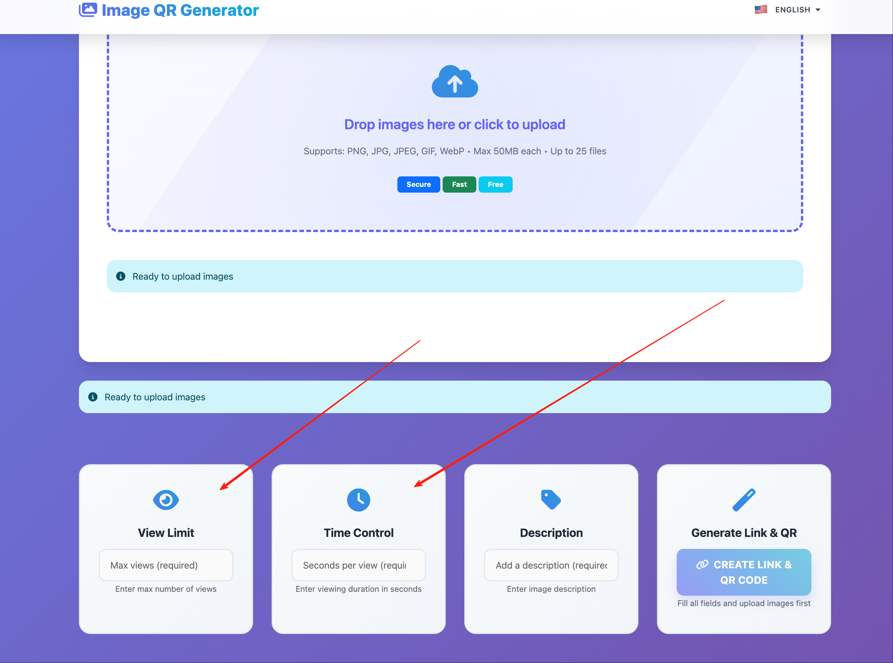
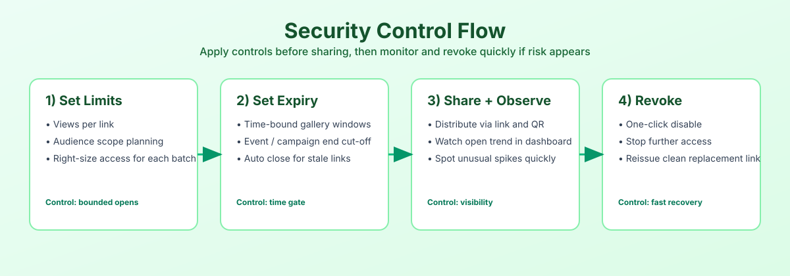

Password gate · Controlled audience
Updated March 2, 2026
MaiImg / 麦瓜图床
Add an intentional gate before recipients view sensitive image sets.
Set a strong password policy.
Share link and passphrase separately.
Confirm intended recipients opened it.

